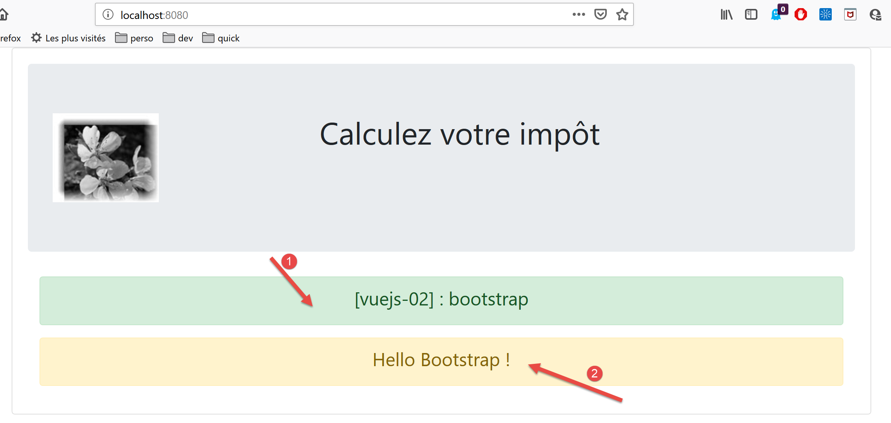

4. Projekt [vuejs-02]: Verwendung des Bootstrap-Frameworks CSS
Das Projekt [vuejs-02] zeigt die Verwendung von Bootstrap in einem [vue.js]-Projekt. Das Framework CSS wird in allen unseren Projekten verwendet. Wir werden eine Variante von Bootstrap namens [BootstrapVue] [https://bootstrap-vue.js.org/] verwenden.
Die Projektstruktur sieht wie folgt aus:

Hinweis: Der oben genannte Ordner „[vuejs]“ wurde im weiteren Verlauf des Dokuments in „[cours] [1]“ umbenannt.
4.1. Installation des Frameworks [BootstrapVue]
[BootstrapVue] ist ein Framework, das mit dem Tool [npm] zum Projekt hinzugefügt wird:

- In [1] werden also zwei Frameworks installiert: [Bootstrap] und dessen Variante [BootstrapVue];
- bei [2] erscheinen beide Abhängigkeiten in der Datei [package.json];
4.2. Das Skript [main.js]
Das Hauptskript [main.js] lautet wie folgt:
// Importe
import Vue from 'vue'
import App from './App.vue'
// Plugins
import BootstrapVue from 'bootstrap-vue'
Vue.use(BootstrapVue);
// Bootstrap
import 'bootstrap/dist/css/bootstrap.css'
import 'bootstrap-vue/dist/bootstrap-vue.css'
// Konfiguration
Vue.config.productionTip = false
// Projektinstanziierung [App]
new Vue({
render: h => h(App),
}).$mount('#App')
- Zeile 2: Import des Frameworks [Vue];
- Zeile 3: Import der Hauptansicht;
- Zeile 6: Import des Frameworks [BootstrapVue];
- Zeile 7: Dieses Framework ist als Plugin des Frameworks [Vue] konzipiert. Zeile 7 bindet dieses Plugin in das Framework [Vue] ein;
- Zeilen 10–11: Import der Dateien CSS aus den Frameworks [Bootstrap] und [BootstrapVue];
- Die Zeilen 5–11 sind somit vollständig der Verwendung von [BootstrapVue] gewidmet. Der Rest des Codes entspricht dem, was wir im vorigen Absatz gesehen haben;
4.3. Die Komponente [App.vue]
<template>
<b-container>
<b-card>
<!-- Bootstrap Jumbotron -->
<b-jumbotron>
<!-- Zeile -->
<b-row>
<!-- Spalte mit einer Breite von 4 -->
<b-col cols="4">
<img src="./assets/logo.jpg" alt="Cerisier en fleurs" />
</b-col>
<!-- Spalte mit einer Breite von 8 -->
<b-col cols="8">
<h1>Calculez votre impôt</h1>
</b-col>
</b-row>
</b-jumbotron>
<HelloBootstrap msg="Hello Bootstrap !" />
</b-card>
</b-container>
</template>
<script>
import HelloBootstrap from "./components/HelloBootstrap.vue";
export default {
name: "app",
components: {
HelloBootstrap
}
};
</script>
Kommentare
- Zeilen 1–21: Alle <b-xx>-Tags sind Tags des Frameworks [BootstrapVue];
- Zeilen 2, 20: Das Tag <b-container> definiert einen Bootstrap-Container. Innerhalb dieses Containers können wir Zeilen mit dem Tag <b-row> und Spalten mit dem Tag <b-col> definieren;
- Zeilen 3, 19: Das Tag <b-card> definiert eine Bootstrap-„Karte“. Visuell wird dies durch ein Rechteck mit einem Rahmen dargestellt;
- Zeilen 5, 17: Mit dem Tag <b-jumbotron> lässt sich ein Teil der Seite hervorheben, in diesem Fall ein Bild und ein Text. Wir werden es in unseren verschiedenen Projekten als visuelles Erkennungsmerkmal des Projekts verwenden;
- Zeile 7: Das Tag <b-row> definiert eine Zeile;
- Zeilen 9–11: Das Tag <b-col> definiert eine Spalte der vorherigen Zeile. Bootstrap weist jeder Zeile 12 Spalten zu. Das Attribut [cols=’4’] gibt an, dass die Spalte <b-col> 4 dieser 12 Spalten einnehmen wird;
- Zeile 10: ein Bild
- Zeilen 13–15: Eine Spalte, die 8 der 12 Spalten der Zeile einnimmt. Dort wird Text eingefügt;
- Zeile 18: Verwendung einer Komponente namens [HelloBootstrap] mit einer Eigenschaft namens [msg];
- Zeilen 24–33: Der Abschnitt <script> der Komponente;
- Zeilen 29–31: Die in Zeile 18 verwendete Komponente [HelloBootstrap] wird exportiert. Damit sie bekannt ist, muss sie in Zeile 25 importiert werden;
Das Ergebnis lautet wie folgt:

- in [1], das <b-card>-Tag;
- in [2], das <jumbotron>-Tag;
- in [3] das Bild über 4 Spalten;
- in [4], der Text in 8 Spalten;
4.4. Die Komponente [HelloBootstrap]
[HelloBootstrap] ist die folgende Komponente:
<template>
<div>
<!-- Meldung auf grünem Hintergrund -->
<b-col cols="12">
<b-alert show variant="success" align="center">
<h4>[vuejs-02] : bootstrap</h4>
</b-alert>
</b-col>
<!-- Meldung auf gelbem Hintergrund -->
<b-col cols="12">
<b-alert show variant="warning" align="center">
<h4>{{msg}}</h4>
</b-alert>
</b-col>
</div>
</template>
<script>
export default {
name: "HelloBootstrap",
props: {
msg: String
}
};
</script>
Anmerkungen
- Zeile 3: Das Tag <b-alert show> zeigt ein farbiges Rechteck an, in das in der Regel ein Text eingefügt wird (Zeile 6). Mit dem Attribut [variant] kann ein Alarmtyp ausgewählt werden. Jeder Alarmtyp hat eine andere Hintergrundfarbe. Die Farbe der Variante [success] ist Grün. Mit dem Attribut [align] kann der Text des Alarms ausgerichtet werden (links, rechts, zentriert). Es ist zu beachten, dass das Attribut [show] erforderlich ist, um die Warnmeldung anzuzeigen. Ohne dieses Attribut ist die Warnmeldung nicht sichtbar;
- Mögliche Werte für [variant]:
- [primary]: blau;
- [secondary]: grau;
- [success]: grün;
- [danger]: hellrot;
- [warning]: gelb;
- [info]: türkis;
- [light]: keine Hintergrundfarbe;
- [dark]: Grau, etwas dunkler als [secondary];
- Zeile 12: [msg] ist ein Parameter der Komponente [HelloBootstrap] (Zeilen 21–23);
Die visuelle Darstellung sieht wie folgt aus:

- [1]: Tag <b-alert show variant=’success’>;
- [2]: Tag <b-alert show variant=’warning’>;
4.5. Ausführung des Projekts
Um das Projekt auszuführen, wird zunächst die Datei [package.json] geändert:

- in [3], das vom Befehl [serve] ausgeführte Skript [2] aus der Datei package.json [1] wird geändert;
- in [4] wird das Projekt ausgeführt;
Hinweis: Im weiteren Verlauf werden die Tags des Frameworks BootstrapVue verwendet, also Tags der Form <b-qqchose>. Dies ist jedoch nicht zwingend erforderlich. Man kann auch die ursprünglichen Tags des Bootstrap-Frameworks verwenden. Diese funktionieren in den Vorlagen von [Vue.js]. Entwickler, die an Bootstrap-Tags gewöhnt sind, können diese daher weiterhin nutzen.